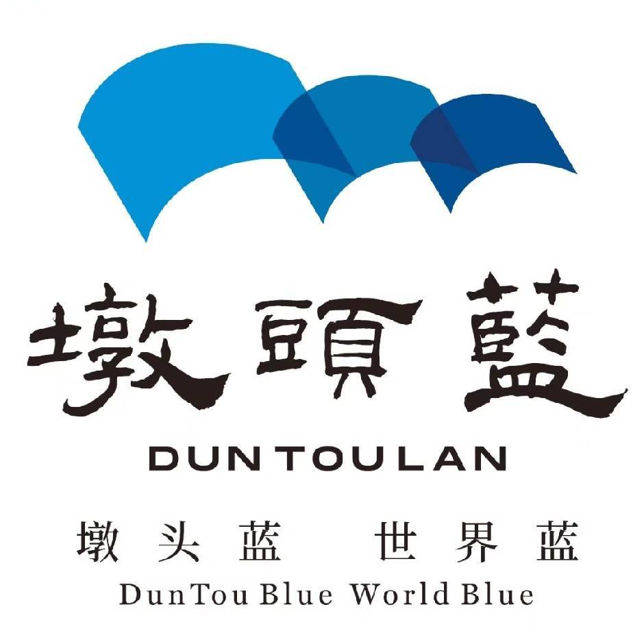
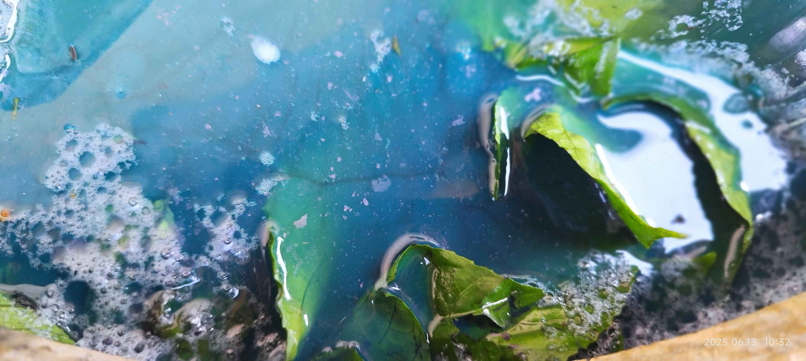

为了让更多人亲身感受墩头蓝的魅力，我们设计了 三层级研学体系， 从线上到线下，从体验到深入，满足不同人群的需求。无论你是初学者还是文化深度爱好者， 都能在这里找到适合自己的体验方式。
适合人群： 对蓝染感兴趣、想在家尝试的初学者
内容： 包含蓝染材料包（染料、布料、工具）和在线视频教程，在家就能完成自己的第一件蓝染作品。
时长： 约1-2小时
收获： 了解墩头蓝文化，亲手完成一件扎染作品，建立品牌认知。
适合人群： 想亲身到墩头村体验的亲子家庭、学生群体
内容： 在墩头村实地参观古村风貌、了解墩头蓝历史，在工坊亲手体验蓝染制作。
时长： 约半日（3-4小时）
收获： 加深对墩头蓝的情感联结，带走自己制作的蓝染作品。
适合人群： 深度文化爱好者、想系统了解非遗的游客
内容： 完整的一日行程，包含古村导览、传承人讲解、全套蓝染实践、纹样设计等闯关式体验，深度了解墩头蓝的全流程。
时长： 全天（6-8小时）
收获： 成为墩头蓝的"荣誉传承人"，打造口碑爆点。
从扎布、浸染到氧化，全程亲手操作
了解墩头蓝六百年历史与客家文化
有机会与曾春雷老师面对面交流
完成的作品可以带回家作纪念
亲子活动、学校研学、朋友聚会皆宜

↑ 蓝染体验现场